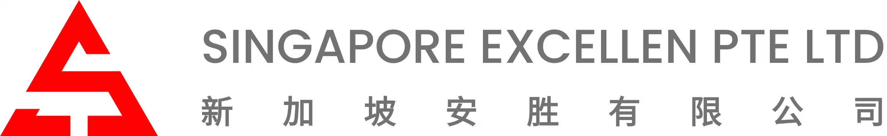
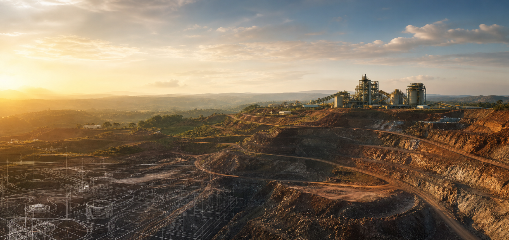

DRC Copper-Cobalt Portfolio
刚果（金）铜钴资源项目
根据上海锦源晟新能源材料集团有限公司官网公开信息，安胜相关项目包括刚果（金）绿纱项目、PE4881自有矿山开发及KIK铜钴项目，覆盖铜钴湿法冶炼、矿体开发、选矿厂建设和社区协同发展。
- 绿纱项目
- 2020年7月投产
- PE4881
- 2025年5月开工
- KIK项目
- 产品分成模式铜钴项目


安胜平台开始布局关键矿产资源
刚果（金）绿纱铜钴湿法冶炼项目投产
PE4881矿体开发选矿厂项目开工
Company
新加坡安胜有限公司以新加坡为国际投资与贸易协同平台，关注铜、钴等能源转型相关金属的长期价值。公司围绕矿业资产投资、技术方案评估、项目建设组织和运营治理，建立面向跨境矿业项目的投资管理能力。
在项目推进中，公司重视与工程设计机构、地质技术团队、当地合作伙伴及金融机构的协作，以审慎尽调、分阶段开发和透明沟通作为项目管理原则。
Projects
DRC Copper-Cobalt Portfolio
根据上海锦源晟新能源材料集团有限公司官网公开信息，安胜相关项目包括刚果（金）绿纱项目、PE4881自有矿山开发及KIK铜钴项目，覆盖铜钴湿法冶炼、矿体开发、选矿厂建设和社区协同发展。
矿权、资源量、矿体边界、环境条件、社区关系和合规文件核验。
采矿、选矿、焙烧、湿法冶炼、供水供电和尾矿设施方案评估。
分阶段工程管理、施工图设计、设备采购、承包商组织和质量控制。
阴极铜、粗制氢氧化钴、硫酸及相关矿产品的生产、成本和合规管理。
Capabilities
围绕铜钴矿权、资源量、品位、采选冶条件、资本开支和回收周期，建立审慎的项目筛选与投资判断框架。
连接矿山设计、选冶工艺、基础设施、设备供应和现场建设管理，支持绿纱、PE4881、KIK等项目从方案走向可执行计划。
统筹新加坡、中国内地、非洲当地合作方之间的商务、法律、财务和技术沟通，降低跨区域项目执行摩擦。
关注安全、现金成本、供应链、税务、外汇、社区关系和政策变化，为矿业资产建立可持续经营基础。
Responsibility
以安全生产、尾矿管理、水资源保护、土地复垦和排放控制作为项目设计与运营的重要边界。
尊重当地社区、就业与供应链参与机会，推动项目收益与所在地区长期发展相协调。
重视矿权、税务、贸易、反腐败和供应链合规，支持合作方基于正式文件开展尽调。
Contact
如需了解新加坡安胜有限公司项目资料、工程合作、投资合作或供应链合作，请通过公司授权渠道联系。公司注册资料、项目文件及合作文件应以正式盖章版本为准。